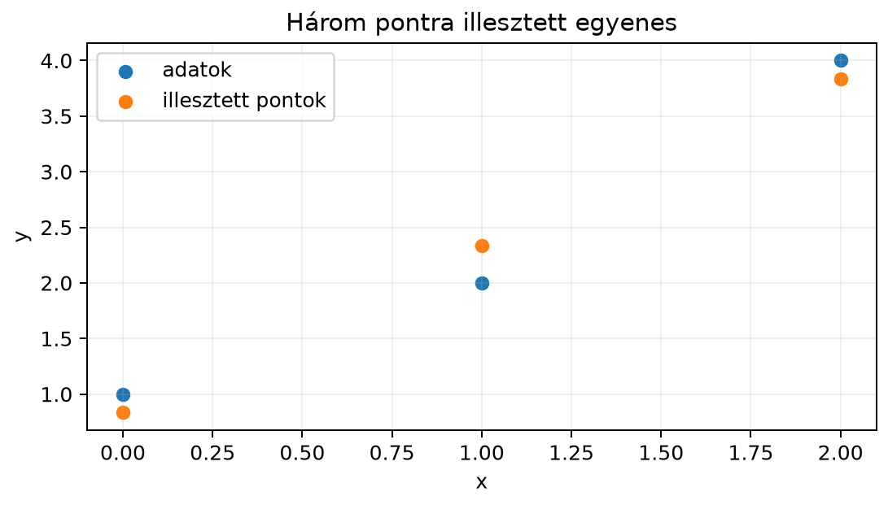

Tegyük fel, hogy három mérési pontunk van:
,
és
.
Olyan
egyenest keresünk, amely „a lehető legjobban” illeszkedik rájuk. A három
pont nem esik egy egyenesre, ezért nincs olyan
és
,
amelyre mindhárom egyenlet egyszerre teljesül:
Ez egy túlhatározott egyenletrendszer: több egyenletünk van, mint
ismeretlenünk. A 12.1. alfejezetben (Túlhatározott
rendszerek és a legkisebb négyzetek ötlete) láttuk, hogy a legkisebb
négyzetek elve szerint azt a
-et
keressük, amely minimalizálja a hiba négyzetösszegét. Most ebből a
geometriai gondolatból levezetjük a normálegyenletet, és megmutatjuk,
hogyan lehet stabilan megoldani.
12.2.2 Szemléletes kép
Rajzoljuk fel a három pontot és az egyenest, amelyet hamarosan
kiszámolunk:

Három pontra illesztett egyenes -
Számított adatok: az illesztett egyenes y = 0,8333 + 1,5t; az adatpontok
és az egyenes megfelelő pontjai.
A mért pontok:
,
,
.
Az illesztett egyenes az
lesz. A függőleges hibák:
,
,
,
ezek négyzetösszege
.
A legkisebb négyzetes megoldás éppen az, amelynél a hibavektor merőleges
az oszloptérre; ebből kapjuk a normálegyenletet.
12.2.3 A normálegyenlet
levezetése
Tekintsük az
egyenletrendszert, ahol
,
,
és
.
A
legkisebb négyzetes megoldás az, amelyre a hibavektor
a lehető legrövidebb. A korábbi altér- és merőlegesség tárgyalásból
tudjuk, hogy ez akkor áll fenn, ha
merőleges
minden oszlopára, tehát az oszloptér
minden elemére. Ez azt jelenti, hogy
benne van a bal nulltérben, azaz
Helyettesítsük be
-et:
Felbontva a zárójelet és átrendezve:
Ezt nevezzük normálegyenletnek. A név onnan
származik, hogy a hibavektor merőlegességét fejezi ki.
Tétel. Legyen
,
,
.
Az
túlhatározott rendszer legkisebb négyzetes megoldásai (vagyis a
minimumhelyei) pontosan azok a
vektorok, amelyekre
Ha
oszlopai lineárisan függetlenek, akkor
invertálható, és a megoldás egyértelmű:
12.2.4 Megoldhatóság: mikor
invertálható
?
Az
mátrix mindig szimmetrikus, hiszen
Ha
oszlopai lineárisan függetlenek, akkor
invertálható. Ennek belátásához tetszőleges
-re
számoljuk ki:
A norma négyzete mindig nemnegatív, és pontosan akkor nulla, ha
.
Lineárisan független oszlopok esetén
csak az
esetben teljesül. Tehát tetszőleges nemnulla
-re
a fenti kifejezés pozitív; az ilyen szimmetrikus mátrixot
pozitív definitnek nevezzük (részletesen a sajátértékek
után tárgyaljuk). Ebből az invertálhatóság közvetlenül következik: ha
volna valamilyen
vektorra, akkor
is teljesülne, ami ellentmondás. A négyzetes
homogén rendszerének tehát csak a triviális megoldása van, így
invertálható.
Fontos hangsúlyozni: ha
oszlopai nem függetlenek, akkor
szinguláris, és a normálegyenletnek végtelen sok megoldása van. Ilyenkor
a legkisebb négyzetes probléma megoldásához pszeudoinverzet vagy SVD-t
érdemes használni.
12.2.5 Kidolgozott példa
Megjegyzés a paramétersorrendről. A 12.1. alfejezet
példájában a tervezési mátrix oszlopai
sorrendűek, a paramétervektor pedig
volt. Ebben a példában a regressziós irodalomban szokásos sorrendet
követjük: az első oszlop az egyeseké, a második a
értékeké, ezért a paramétervektor
.
A két felírás ugyanazt az egyenest írja le; a paramétervektorok csak a
két koordináta felcserélésében térnek el.
Illesszünk egyenest a
,
,
pontokra. Az egyenes egyenlete
,
azaz az ismeretlen vektor
A három pontra felírt egyenletek mátrixalakban:
Először számítsuk ki a normálegyenlet mátrixait. Az
oszlopai:
Ezek lineárisan függetlenek, mert egyik sem skalárszorosa a másiknak.
Kiszámoljuk:
mert
,
,
és
.
Hasonlóan:
A normálegyenlet tehát:
Kiírva:
A második egyenletből kivonva az elsőt:
tehát
.
Az első egyenletből
,
így
.
A legkisebb négyzetes megoldás:
Az illesztett egyenes:
Ez a 12.1. alfejezet példájától eltérő adathalmazból adódó egyenes; a
paramétervektor itt
sorrendű.
Ellenőrizzük a merőlegességet. A hibavektor:
Kiszámolva:
A hiba tehát valóban merőleges az oszloptérre, így a megoldás valóban
legkisebb négyzetes.
12.2.6 QR-alapú megoldás
A normálegyenlet közvetlen megoldása elméletileg helyes, de
numerikusan instabil lehet, ha az
mátrix kondíciószáma nagy. A gyakorlatban gyakran jobb a QR-felbontást
használni.
Írjuk fel
-t
QR-alakban:
,
ahol
ortonormált oszlopú
(;
nem négyzetes, ezért nem ortogonális mátrix),
pedig felső háromszögmátrix. Helyettesítsük ezt a normálegyenletbe:
Rendezzük:
Mivel
,
egyszerűsödik:
Ha
invertálható (ami független oszlopok esetén igaz), akkor
is az, és mindkét oldalt balról
-zel
szorozva:
Ez egy felső háromszögmátrixú egyenletrendszer, amelyet
visszahelyettesítéssel stabilan meg lehet oldani. A QR-alapú megoldás
előnye, hogy nem kell kiszámítani az
mátrixot, így a kondíciószám sem romlik négyzetesen.
Az elsőből
,
azaz
.
Ugyanazt kaptuk, mint a normálegyenletből:
,
.
12.2.7 Kondicionálás romlása
-ban
A normálegyenlet közvetlen megoldásakor az
mátrixszal dolgozunk. Ennek kondíciószáma lényegesen rosszabb lehet,
mint az eredeti
-é.
Tegyük fel, hogy
teljes oszloprangú (például
és a rang
),
ekkor
invertálható. Ha
szinguláris értékei
,
akkor
sajátértékei
.
A kondíciószám:
Ha
ranghiányos, akkor
,
és a
azonosságot nem használhatjuk véges értékként; széles
()
mátrixnál
mérete miatt mindig szinguláris, miközben
véges lehet. Ilyenkor a normálegyenlet közvetlen megoldása eleve nem
lehetséges, és pszeudoinverzre vagy regularizációra van szükség.
Példánkban
szinguláris értékei:
és
,
így
.
Ezzel szemben
.
Kis feladatoknál ez nem okoz gondot, de nagy, rosszul kondicionált
mátrixoknál a négyzetes romlás komoly numerikus hibákhoz vezethet. Ezért
a gyakorlati algoritmusok (például a np.linalg.lstsq) nem a
normálegyenletet invertálják, hanem QR- vagy SVD-alapú felbontást
használnak. A szinguláris értékeket és a kondíciószámot a 16.1.
alfejezetben (Mátrixnormák, spektrálnorma és
kondíciószám) tárgyaljuk részletesen; itt csak előretekintünk.
12.2.8 NumPy-ellenőrzés
A következő kód ugyanazt a példát oldja meg három módon: a
normálegyenlet megoldásával, QR-felbontással és a beépített
lstsq függvénnyel.
A np.linalg.lstsq SVD-alapú, ezért akkor is ad
megoldást, ha
szinguláris; ilyenkor a minimális normájú legkisebb négyzetes megoldást
szolgáltatja. A residuals a hibavektor négyzetösszegét
tartalmazza, ha
és
teljes oszloprangú; a rank a mátrix rangját, az
s pedig a szinguláris értékeket adja vissza.
12.2.9 Tipikus hibák és
félreértések
invertálhatóságának feltételezése független oszlopok nélkül. Ha
oszlopai összefüggők,
szinguláris, és a normálegyenletnek nincs egyértelmű megoldása. Ilyenkor
a np.linalg.solve(A.T @ A, A.T @ b) hívás
LinAlgError hibát dobhat, vagy a kerekítési hibák miatt
értelmetlenül nagy számokat adhat; helyette
np.linalg.lstsq-t kell használni.
A normálegyenlet közvetlen inverzzel való
megoldása. Az
képlet elméletileg helyes, de numerikusan instabil, mert a kondíciószám
négyzetesen romlik. A gyakorlatban QR- vagy SVD-alapú megoldást
használunk.
Shape-hiba a mátrixműveleteknél. Az
mérete
,
az
mérete
(vagy
elemű vektor). Nem szabad összetéveszteni az
mátrixszal, amely
méretű, és általában nem is invertálható.
12.2.10 Feladatok
12.2.10.1 (a) Fogalmi kérdés
Miért fejezi ki az
feltétel azt, hogy
legkisebb négyzetes megoldás?
12.2.10.2 (b) Kézi számolás
Illessz egyenest a
,
,
,
pontokra a normálegyenlet segítségével. Írd fel
-t
és
-t,
számold ki
-t
és
-t,
oldd meg az egyenletrendszert.
12.2.10.3 (c) NumPy-feladat
Adott
és
.
Oldd meg np.linalg.lstsq segítségével, és hasonlítsd össze
a normálegyenletből kapott megoldással. Számold ki a két mátrix
kondíciószámát is (np.linalg.cond).
12.2.10.4 (d) Gondolkodtató
feladat
Magyarázd el, miért lehet a QR-alapú megoldás akkor is stabil, amikor
az
mátrix közel szinguláris. Utalj arra, hogy a QR-felbontás nem képzi az
mátrixot.
12.2.11 Megoldások
12.2.11.1 (a)
A legkisebb négyzetes megoldás geometriailag az
pont, amely az oszloptérben a legközelebb van
-hez.
A hibavektor
akkor a legrövidebb, ha merőleges az oszloptérre. Az oszloptérre való
merőlegesség pontosan azt jelenti, hogy a vektor merőleges az összes
oszlopra, azaz
-tal
szorozva nullát kapunk.
12.2.11.2 (b)
Az adatpontok:
.
Az egyenes
,
ezért
Számoljuk ki:
Részletezve: az első oszlop csupa egyes, a második a
értékek. Az
elemei:
,
,
.
Az
elemei:
,
.
Kézzel ellenőrizve:
,
,
így a megoldás
;
mindkét módszer ezt adja. A kondíciószámok (4 tizedesre kerekítve):
,
,
ami a négyzetes romlást szemlélteti.
12.2.11.4 (d)
A QR-felbontás során
alakot kapunk, ahol
ortonormált oszlopú,
pedig felső háromszögmátrix. Az
egyenletben már nem szerepel az
mátrix. Az ortogonális transzformáció nem rontja a kondíciószámot, így
,
nem pedig annak négyzete. Ezért a QR-alapú megoldás akkor is megbízható
marad, amikor
közel szinguláris, és a normálegyenlet közvetlen invertálása numerikusan
katasztrofális lenne.
12.2.12 Rövid összefoglaló
A túlhatározott
rendszer legkisebb négyzetes megoldását a hibavektor oszloptérre való
merőlegességéből kapjuk. Ez vezet a normálegyenlethez:
.
Ha
oszlopai lineárisan függetlenek,
pozitív definit és invertálható, így a megoldás egyértelmű. Numerikusan
azonban jobb a QR-felbontást használni, amely az
felső háromszögrendszerre vezet; ezzel elkerüljük az
képzését, és a kondíciószám nem romlik négyzetesen. A
np.linalg.lstsq SVD-alapú, ezért a gyakorlatban ez az
ajánlott megoldás.